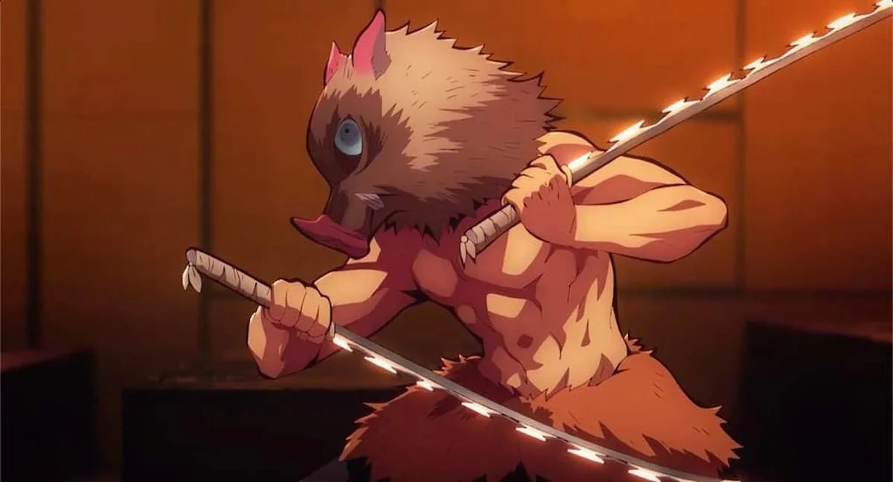
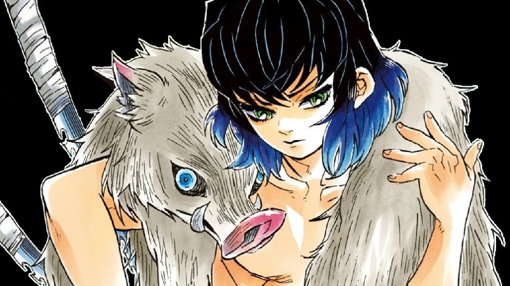

Inosuke Hashibira (嘴はし平びら伊い之の助すけ, Hashibira Inosuke?) es uno de los personajes principales de la franquicia Kimetsu no Yaiba.
Fue un Cazador de Demonios perteneciente al Cuerpo de Exterminio de Demonios, creador y único usuario conocido de la Respiración de la Bestia.
Inosuke fue un joven de estatura promedio. Siempre solía llevar puesta una máscara hecha con la cabeza de un Jabalí de pelaje gris y ojos azules.
En lugar de llevar el uniforme estándar de los Cazadores de Demonios, llevaba puesto un Hakama negro con una falda hecha de pelaje en la cintura protegiendo su ingle y sus genitales.
Al no llevar el saco del uniforme de cazador de demonios promedio, enseñaba su torso el cual tenía una apariencia completamente musculosa y tonificada.


VOLVER